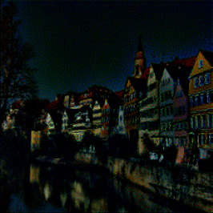

Overview
Style transfer involves taking the style (texture) from one image and transferring it to another. Most parametric (not using the original texture) methods can trace their roots to insights of Béla Julesz. He formalized the notion of textures by conjecturing that they have statistical properties that our human eyes pick up. Thus, we can coerce an initial noise image towards one that shares the same statistical parameters (textons) as the original texture. Heeger & Bergen '95 does this while operating on marginal first-order statistics (in the form of filters), followed by Simoncelli & Portilla '98 which implement a more robust method with second-order statistics (i.e. capturing the relation among first-order statistics). This appeared to be the 'correct' way to quantify textures, but with the squared complexity (relations) came an increase in the number of parameters to be learned leading to a computationally expensive model that was finnicky to dial-in.
In 2015, A Neural Algorithm of Artistic Style by Gatys et al. proposes using deep convolutional neural networks (CNNs) for style transfer. The rationale is that deep convolutional neural networks trained for image recognition implicitly operate on the content and style of images -- they've even been used to classify artworks according to the period in which they were created. This is thought to be possible as (successful, object-recognition) networks must become invariant to all object variations that preserve an object's identity. That is, they are able to factorise the content from appearance. Therefore, we can pick out specific learned filters/features from the network's layers and use them to extract the relevant texture information/statistics.
Model
Similar to last project, we will be using the VGG 19 model pretrained on the ImageNet dataset. Similar to diffusion networks, we begin with a random noise image. With this, we will coerce it towards the style of one image and the content of another. Formally, we define the loss function as a weighted sum of these two loss terms: $$ \mathcal L_\text{total}(\vec p, \vec a, \vec x) = \alpha \mathcal L_\text{content}(\vec p, \vec x) + \beta \mathcal L_\text{style}(\vec a, \vec x) $$ We can look at each learned layer of the network as a non-linear filter bank where the complexity increases proportionally to the depth within the network. Mathematically, a layer with $N_l$ distinct filters (feature maps) are of size $M_l$ given by the height times width of the filter. Thus, the response at each of the $l$ layers can be stored in $F^l \in \mathbb R^{M_l \times N_l}$ where $F^l_{i,j}$ corresponds to the activation of the $j$th filter at the $i$th pixel.
Content
To extract the content information from the network we will useconv4_2. Since
it is deep in the stack, it contains the contextual information. With $\vec p,\ \vec x$ as the
(content) original and generated image, we define the content loss as the Mean Squared Error (MSE) between the
corresponding feature representations $P^l,\ F^l$:
$$
\mathcal L_\text{content}(\vec p, \vec x, l) = \frac{1}{2} \sum_{i,j} \left(P_{i,j}^l -
F_{i,j}^l\right)^2
$$
Style
And for style, we'll use theconv1_1 through conv5_1. Let $G$ be the Gram matrix of the features $F$ (i.e for
some layer $l$: $G_{ij}^l = \sum_k F_{ik}^l F_{jk}^l$). This effectively captures the covariance
between the filters while tossing out the spatial information. With $\vec a,\ \vec x$ as the (style)
original and generated image, we define the style loss as the weighted MSE between the entries of the
corresponding Gram matrices $A^l,\ G^l$:
$$\begin{align*}
\mathcal L_\text{style} (\vec a, \vec x) &= \sum_l^L w_l \cdot \frac{1}{4N_l^2 M_l^2} \sum_{i,j}
\left(G_{ij}^l -
A_{ij}^l\right)^2 \\
\end{align*}$$
Implementation
The authors suggest using LBFGS rather than Adam as the formers converges much faster (but is more memory intensive). This worked incredibly well as I could get away with training ~20-40 epochs (as opposed to the 100s). Additionally, since the (image) inputs to network must be the same size we stretch the style image to match the content.
Because our output image starts as random noise, we can scale it by some percentage to reduce its variance allowing us to converge to (less grainy) results faster. [Note that these example images were made on an early version of the program and are scaled differently.].
100% Noise 25% Noise 10% Noise 1% NoiseWe also alter the pooling layers by swapping from max to average -- this results in better gradient flow and thus smoother images. Without this change, we can see that the results pick up less on the content and as such takes longer to converge. This is in contrast to when we initially start with the content image, resulting in too much content and not enough style. This differs from when we do not normalize our input image according to the mean and standard deviation of the ImageNet dataset which causes dim results -- you can read more about when this is a good practice here.
Max Pool Content Initial No Normalization Results
For the final images, I ended up tuning the hyperparameters on a case-by-case basis. Nearly all began as the original content image with some amount of low-variance random noise added to it.
You can hover to see the original.


,_oil_on_canvas,_92.1_x_73_cm,_Tate_Modern,_London.jpg){kind=link}